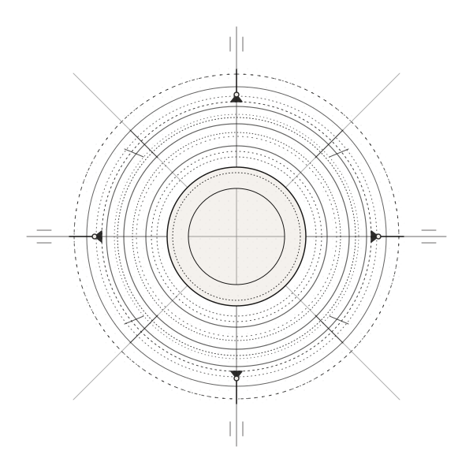
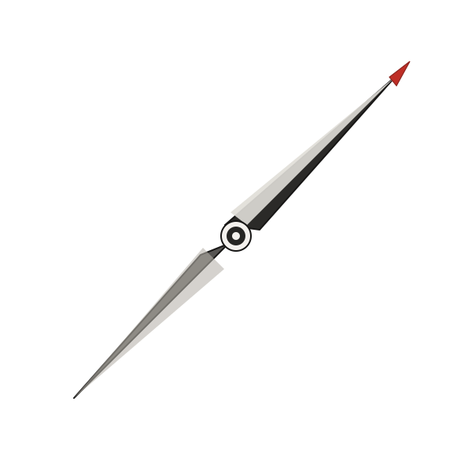
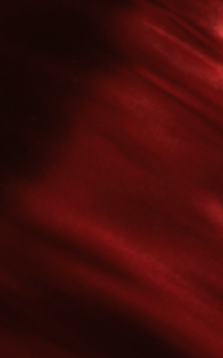
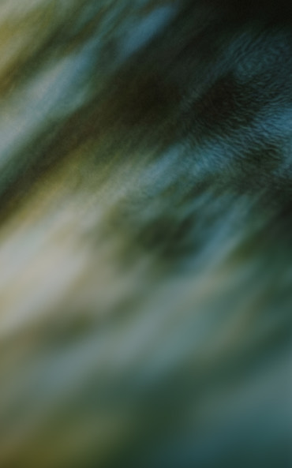
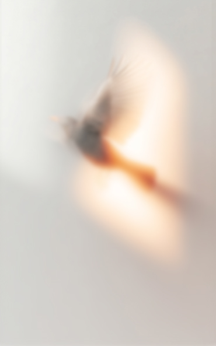
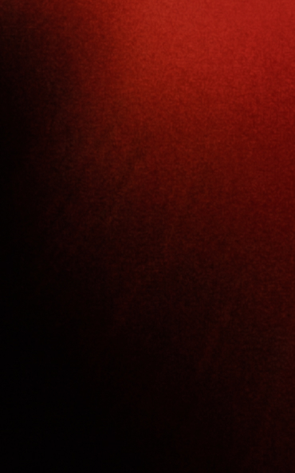

Публичное слово
Фокус на физическом раскрепощении, постановке подлинного, глубокого тембра и работе со сложной сценической аудиторией.
- Перформанс.Акт01
- Перформанс.Левитан02

The Performance — Est. 2016


Мысль рождается в слове
Слово формирует влияние
Влияние формирует реальность

The Performance
Пространство на пересечении культуры, образования и лидерства.

Речь развивает интеллект, а не украшает его

Говорить так, чтобы менялась не тема разговора, а положение дел

Влияние без фундамента —
громкость
Наш институт объединяет людей действия, которые уже состоялись в своих индустриях, но ощущают потребность в обретении нового уровня коммуникационной свободы.
Которым важно доносить идеи
Которым важно формировать мышление
Которым важно вести за собой
Которым важно быть понятыми
Которым важно звучать точно
Мы не тренируем шаблоны. Мы последовательно пересобираем 10 фундаментальных граней вашего проявления в мире.
Учебный процесс структурирован по трём ключевым направлениям, каждое из которых закрывает определённый пласт личной проявленности.
Фокус на физическом раскрепощении, постановке подлинного, глубокого тембра и работе со сложной сценической аудиторией.
Исследование невербальных сигналов, этических рамок высшего общества и создание магнетического персонального бренда.
Интеграция гуманитарных знаний, философии искусства и политологии в личные выступления для создания долгосрочных смысловых изменений.
Закрытое сообщество
Пространство для тех, кто не ищет лёгких тем
Закрытые встречи, ужины, дискуссии, лекции, интеллектуальные путешествия. То, что помогает развиваться в сильном окружении.
философия / культура / бизнес / наука / общество / лидерство
«Мы собираем не клиентов.Мы формируем среду.»
Большинство программ доступны после знакомства с кандидатом и собеседования. Это помогает сохранять качество образовательного пространства и высокий уровень участников.
Запросить интервьюНатали Дюваль — основатель института
Слово как манифест личности
Если вам близка философия ПЕРФОРМАНС, напишите нам.
Расскажите о себе и сформулируйте свой запрос.
Запросить участие